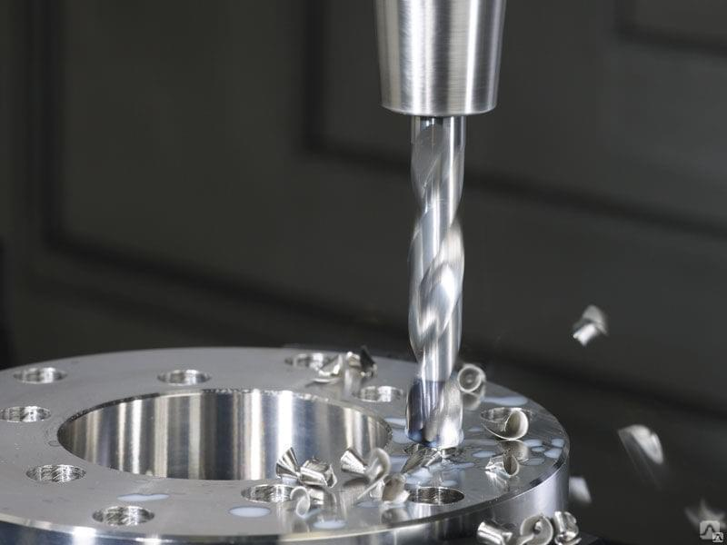

Сверление
Вид механической обработки материалов резанием, при котором с помощью специального вращающегося
режущего инструмента (сверла) получают отверстия различного диаметра и глубины,
или многогранные отверстия различного сечения и глубины.
Применяется для сверления и развертывания отверстий, зенкерования, перфорирования деталей, нарезания внутренней резьбы.